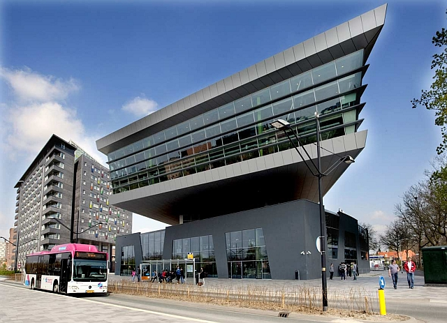

Roc Nijmegen
Ik doe de opleiding software developer op het Roc in Nijmegen. Waarom ik voor deze opleiding heb gekozen is omdat ik het altijd al leuk vond om met computers om te gaan. Toen ik een keer research deed kwam ik bij de opleiding software developer terecht. Het leek me heel erg leuk dus besloot ik om me in te schrijven voor deze opleiding op het Roc in Nijmegen(Technovium). Nu heb ik vakkken zoals HTML,Java, Python maar ook wat normale vakken zoals engels, nederlands, rekenen en nog meer.
Scroll naar onder voor map
↓